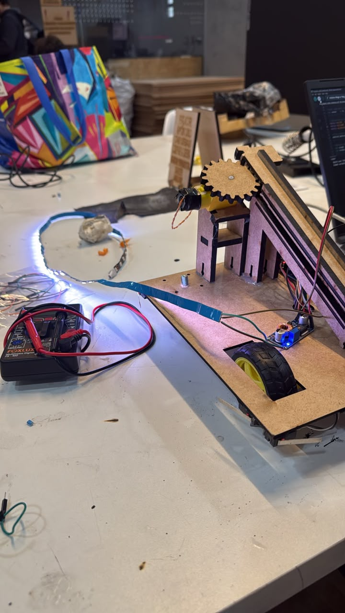
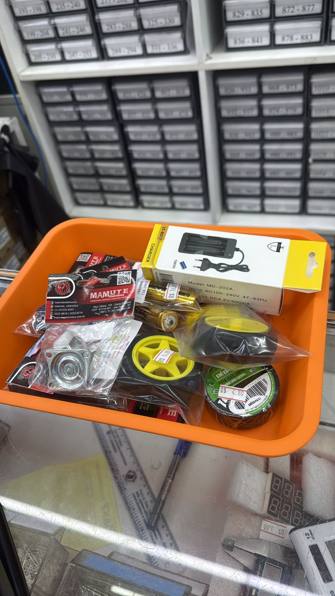
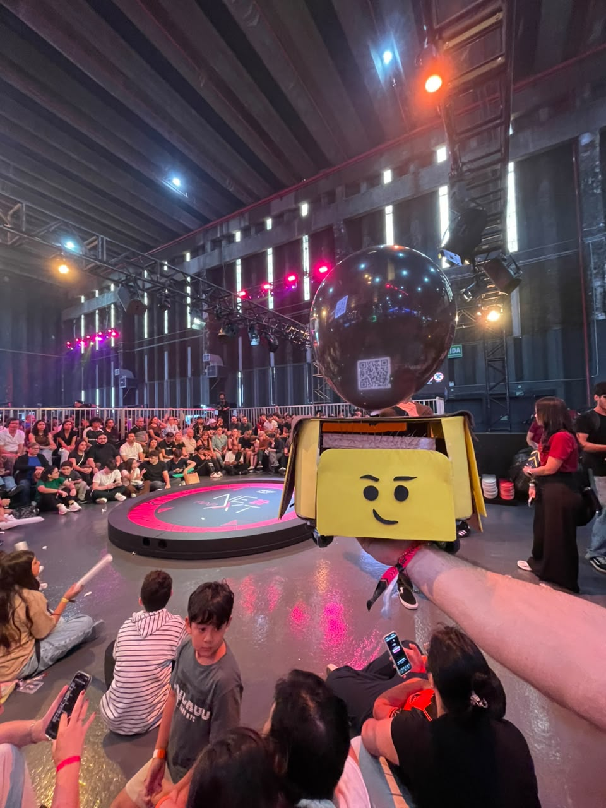
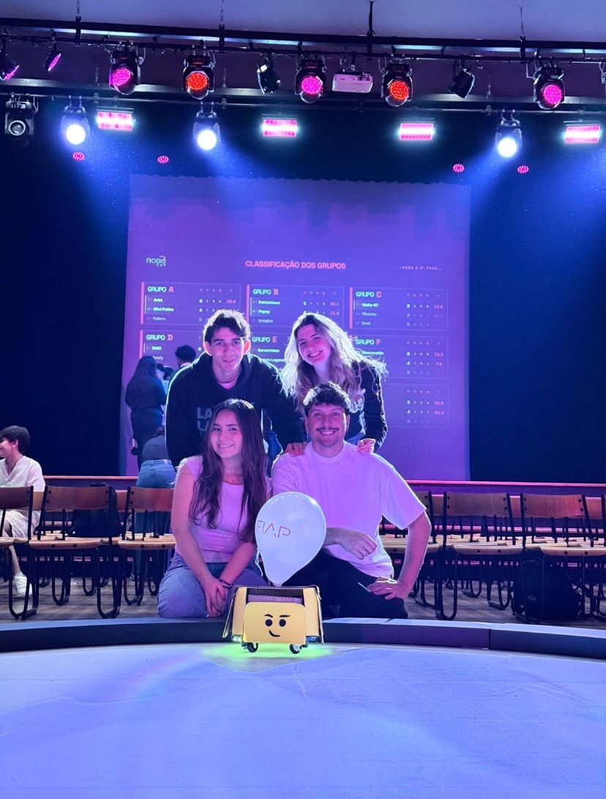
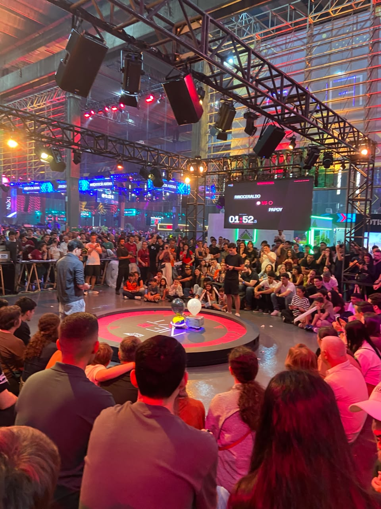
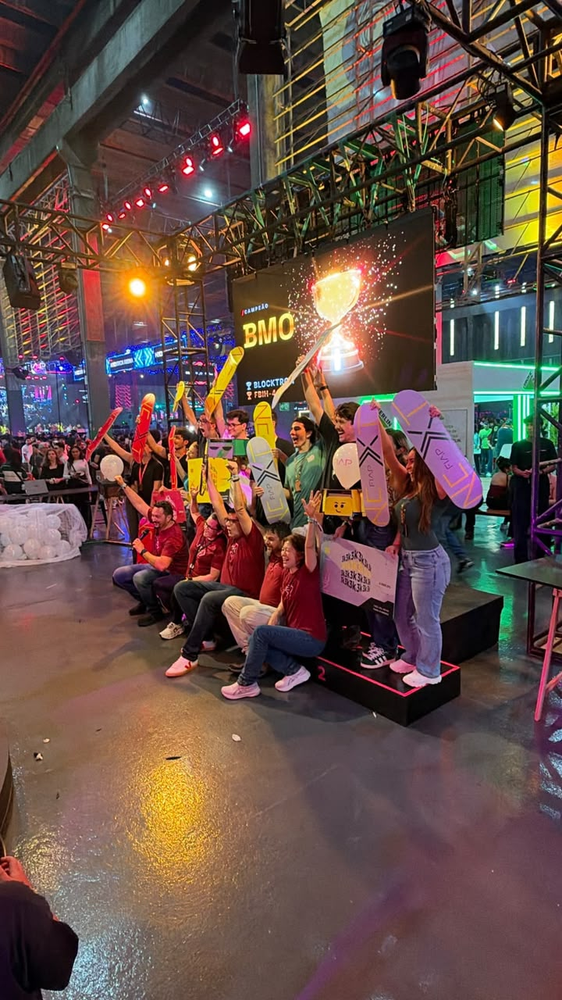
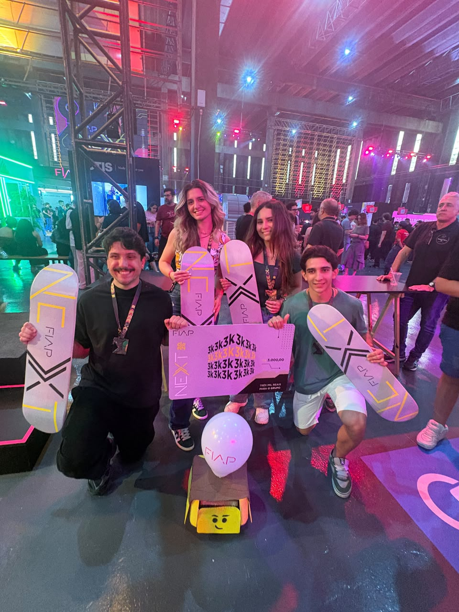
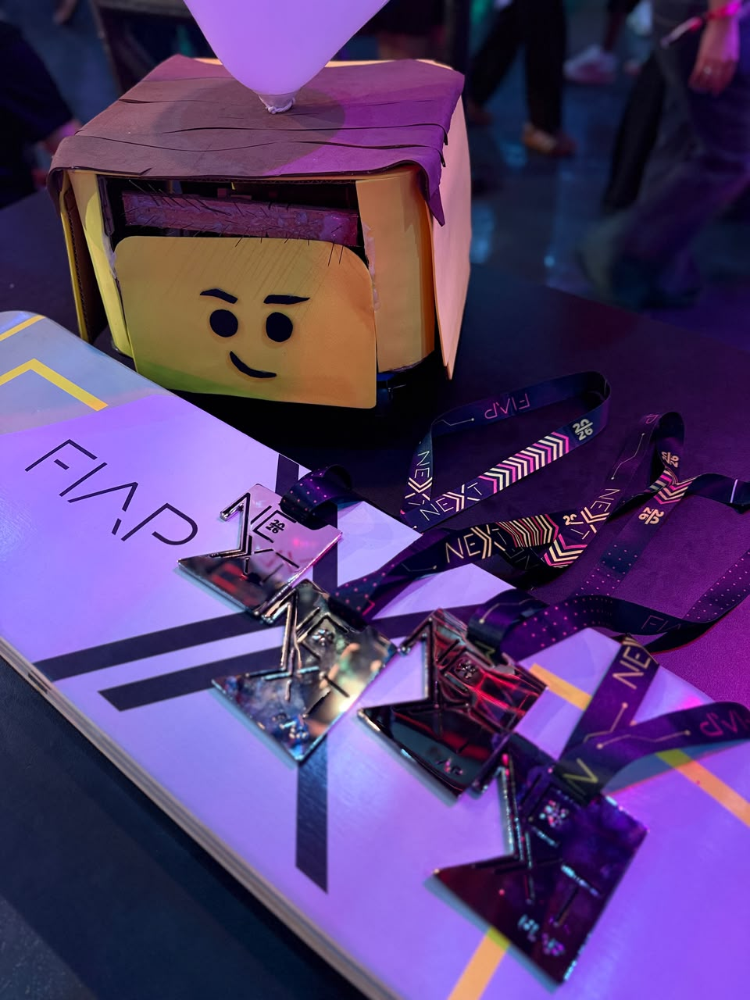

Latência de comando
17 ms de delay escondidos em cada acionamento de motor. Corrigido para microssegundos.
Tudo começou no papel.
A regra é simples de explicar e difícil de executar: cada robô carrega um balão — estoure o do adversário e proteja o seu. Antes de qualquer fio, tudo começou em esboços no papel.

A identidade escolhida foi a cabeça de minifigura LEGO: o balão fica no topo, exatamente onde o adversário vai mirar — então o projeto inteiro gira em torno de proteger esse ponto e atacar o do outro.
A base foi desenhada em CAD e exportada em .dxf para corte a laser em MDF. Ela define onde cada componente vive: motores embaixo, eletrônica no meio sobre espaçadores, balão no ponto mais alto.

base_blocktron.dxf → corte a laser
Centro de massa baixo para não tombar no impacto
Duas rodas motoras e uma roda boba: tração diferencial. Cada lado tem seu motor DC com caixa de redução, e a velocidade é controlada por PWM de 0 a 255.

Girar no lugar (uma roda para frente, outra para trás) fazia o robô parar para virar — e um robô parado na arena é um balão estourado.
Se o robô já está andando quando chega o comando de curva, a roda de fora mantém a potência e a de dentro só desacelera. Resultado: curva em arco, sem perder velocidade.
// roda de dentro numa curva em movimento
const int POTENCIA_CURVA_RODA_DE_DENTRO = 60;
if (modo_linear == 1) { // já andando pra frente
aciona_motor_b(1, 1, POTENCIA_CURVA_RODA_DE_DENTRO);
aciona_motor_b(3, 1, 225);
}O Mega foi escolhido pelas portas seriais extras (o Bluetooth fica na Serial3, deixando a USB livre para depuração) e pelos pinos de sobra. O shield de motor controla 4 motores (PWM nos pinos 11, 3, 5 e 6); os sentidos de rotação passam por um registrador de deslocamento 74HC595, que nós escrevemos bit a bit. A alimentação vem de baterias, com um regulador step-down ajustando a tensão.
O robô respondia atrasado aos comandos. Depois de muito teste, achamos a causa: cada chamada de motor fazia 17 delay(1) para enviar os bits ao 74HC595 — ~17 ms por motor, quando o chip aceita pulsos de nanossegundos.
Trocar por delayMicroseconds(2): ~1000× mais rápido, e o robô passou a responder na hora.
for (i = 0; i <= 7; i++) {
digitalWrite(DIR_SER, LOW);
if ((valor_b_temp & 0b10000000) == 128) digitalWrite(DIR_SER, HIGH);
delay(1); delayMicroseconds(2);
digitalWrite(DIR_CLK, HIGH);
delay(1); delayMicroseconds(2);
digitalWrite(DIR_CLK, LOW);
valor_b_temp = valor_b_temp * 2;
}O módulo Bluetooth fica na Serial3 a 9600 baud. No começo o controle era por botões w/a/s/d: só uma direção por vez, sem controle de velocidade. Depois passamos a usar um joystick no app RoboRemo, que envia uma linha por eixo — x <valor> e y <valor>, de −100 a 100 — repetidamente enquanto o dedo está na tela. O Arduino entende os dois formatos.
No Arduino, os eixos viram a velocidade de cada roda com mixagem arcade drive. Teste aqui — arraste o joystick:
esq = y + x · dir = y − x
Se a conexão cair, o robô não pode sair andando sozinho. O app reenvia o comando a cada 100 ms; se o Arduino ficar 250 ms sem receber nada, para os motores.
São dois sensores de cada lado, colados na base — e mesmo assim qualquer toque na lateral do robô aciona a arma, graças ao jeito que a carcaça foi projetada (veja na fase 09). O sensor entra no pino 10 com INPUT_PULLUP: em repouso lê HIGH; quando algo encosta, vai a LOW — e a arma dispara automaticamente, mais rápido que qualquer reflexo humano.
Não sabíamos em qual pino o sensor tinha ido parar. Só testando descobrimos que ele estava no conector de servo do shield, que cai no pino 10 do Arduino.
pinMode(sensor, INPUT_PULLUP);
if (digitalRead(sensor) == 0 && estado == 0) {
estado = 1; // dispara a arma
tempo_arma = millis();
}Uma fita de 60 LEDs endereçáveis (biblioteca Adafruit NeoPixel) no pino 21. Cada cor é um estado — dá para saber de longe se a arma está pronta. Clique para testar:
As baterias estavam acabando rápido demais, e a arma ficava lenta. A solução foi tirar energia dos LEDs e mandar para onde importa: o brilho da fita ficou limitado em 20 de 255, enquanto o motor da arma avança com PWM máximo (255). Resultado: arma mais rápida e bateria durando a partida inteira.
A arma é uma única estrutura em MDF cortada a laser, com um motor: ele gira uma engrenagem que empurra a barra (cremalheira) para fora do robô e depois a puxa de volta para dentro. Na ponta da barra, várias agulhas coladas para estourar o balão do adversário.
Um ciclo completo leva cerca de 15 segundos, controlado por uma máquina de estados não bloqueante com millis() (versão BlockTron 2 — arma rápida):
Na simulação, a espera de 12,5 s está acelerada.
delay()?Um delay(600) congelaria o robô inteiro: ele pararia de ler o Bluetooth bem no meio do ataque. Com millis(), movimento, sensor e arma rodam "ao mesmo tempo" no mesmo loop().
Por fim, a cabeça de minifigura cobre toda a eletrônica: rosto amarelo, cabelo marrom e o balão no topo. No fim, ficou igualzinha à cabeça do Emmet, de Uma Aventura LEGO — e foi assim que o robô passou a ser chamado na arena.
Use a visão raio-X para ver tudo o que está lá dentro.
Com só dois sensores de cada lado, um toque no lugar "errado" da lateral não seria detectado. Então projetamos a carcaça para que qualquer ponto da lateral acione a arma:

Do rabisco à máquina: 9 fases, 4 motores, 4 sensores e incontáveis horas de depuração.
17 ms de delay escondidos em cada acionamento de motor. Corrigido para microssegundos.
Girar no lugar parava o robô. Criamos curva em arco mantendo o avanço.
Failsafe de 250 ms: sem sinal do app, os motores param sozinhos.
Botões só davam liga/desliga. Passamos para joystick analógico, com mixagem arcade drive no Arduino.
Transformar a rotação do motor em avanço e recuo da barra de agulhas, com engrenagem e guia cortadas a laser.
Direcionamos a energia: LEDs com brilho baixo, motor da arma no máximo. Arma mais rápida e bateria durando mais.
Só 2 sensores por lado. Laterais de EVA presas só no teto viram dobradiça: qualquer toque aciona.
Papelão na estrutura, EVA forrado com papelão nas laterais e MDF só na base.
Descobrimos testando que o sensor estava no conector de servo do shield — pino 10.

Depois da fase de grupos, a equipe Blocktron garantiu a vaga na final do NEXT. Na foto, a equipe com o Emmet logo depois da classificação, com a tabela dos grupos no telão.



